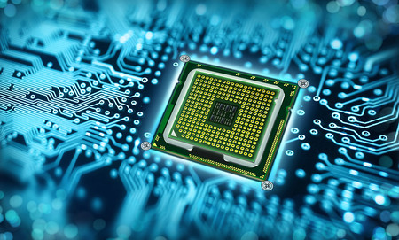

arquitecturas de computo
Arquitecturas de computos
la arquitectura de computadoras es el diesño conceptual y la estructura operacional fundamental
de un sistema de computadoras... Tambien suele definirse como la forma de interconectar componentes
de hardware, para crear computadoras segun los requirimientos de funcionalidad ,rendimiento y costo.
Procesador
Es el cerebro del sistema, encargado de procesar todos los datos e informaciones. A pesar de que es un dispositivo muy sofisticado no puede llegar a hacer nada por sí solo. Para hacer funcionar a este necesitamos algunos componentes más como lo son memorias, unidades de disco, dispositivos de entrada/salida y los programas.

- Nivel de Componente. Los elementos de este nivel son difusiones de impurezas tipo P y de tipo N en silicio, polisilicio cristalino y difusiones de metal que sirven para construir los transistores.
- Nivel Electrónico. Los componentes son transistores, resistencias, condensadores y diodos construidos con las difusiones del nivel anterior. Esta tecnología de muy alta escala de integración o VLSI es la que se utiliza en la fabricación de circuitos integrados. En este nivel se construyen las puertas lógicas a partir de transistores.
- Nivel Digital. Se describe mediante unos y ceros son las puertas lógicas, biestables y otros módulos tanto combinacionales como secuenciales. Este nivel es la aplicación del algebra booleana y las propiedades de la lógica digital.
- Nivel RTL. El nivel de transferencia de registros RTL será el preferido para la descripción de los computadores. Elementos típicos en este nivel de abstracción son los registros y módulos combinacionales aritméticos.
- Nivel PMS. Este nivel es el más alto de la jerarquía. Las siglas PMS provienen del ingles Processor Memory Switch. Con elementos de jerarquía los buses, memorias, procesadores y otros módulos de alto nivel.
Clasica
La arquitectura Von Neumann tiene sus orígenes en el trabajo del matemático John Von Neumann desarrollado con John Mauchly y John P. Eckert y divulgado en 1945 en la Moore School de la Universidad de Pensilvania, Estados Unidos, en el que se presentaba e EDVAC ( Electronic Discrete Variable Automatic Computer). De aquí surgió la arquitectura del programa almacena en memoria y búsqueda/ejecución secuencial de instrucciones. En términos generales una computadora tiene que realizar 3 funciones:
Procesamiento de datos
Almacenamiento de datos
Transferencia de datos
Estructura basica de una computadora ---->

CPU: Controla el flujo de datos, los procesa, y gobierna el secuenciamiento de las acciones en todo el sistema.
Memoria: es la responsable del almacenamiento de datos.
Entrada/Salida: transfiere datos entre el entorno exterior y el computador. En él se encuentran los controladores de periféricos que forman la interfaz entre los periféricos, la memoria y el procesador.
Sistema de interconexión: Buses; es el mecanismo que permite el flujo de datos entre la CPU, la memoria y los módulos de entrada/salida. Aquí se propagan las señales eléctricas que son interpretadas como unos y ceros lógicos.
Periféricos: estos dispositivos son los que permiten la entrada de datos al computador, y la salida de información una vez procesada.
Unidad central del procesamiento
Controla el funcionamiento de los elementos de un computador. Desde que el sistema es alimentado por una corriente, este no deja de procesar información hasta que se corta dicha alimentación.

Unidad de Control (UC): La unidad de control se encarga de leer de la memoria las instrucciones que debe de ejecutar y de secuenciar el acceso a los datos y operaciones a realizar por la unidad de proceso.
Unidad Aritmética Lógica o ALU (por su acrónimo en ingles Arithmetic Logic Unit): Es la parte de la CPU encargada de realizar las transformaciones de los datos.
Registros Internos:
- Contador de programa.- se encarga de almacenar la dirección de la siguiente instrucción a ejecutar.
- Registro de Instrucción.- se almacena la instrucción capturado en memoria y la que se está ejecutando.
- Registro de Estado.- compuesto por una serie de bits que informan el resultado obtenido en la última operación de la ALU.
- Registro Acumulador.- algunos CPU’s realizan operaciones aritméticas en un registro llamado acumulador, su función es la de almacenar los resultados de las operaciones aritméticas y lógicas.
Memoria
En la memoria se almacena el programa y los datos que va a ejecutar el CPU. Las instrucciones son códigos binarios interpretados por la unidad de control, los datos de igual manera se almacenan de forma binaria.
Entrada/salida
Como sabemos una computadora tiene dispositivos de entrada y salida como son los que contiene el gabinete, disco duro, placa madre, unidades de CD o DVD, etc. El problema principal que existe entre ellos es su tecnología y que tienen características diferentes a los del CPU, estos también necesitan una interfaz de cómo se van a entender con el CPU, al igual que el procesador y el controlador periférico para intercambiar datos entre la computadora.
Sistema de Interconexión: Buses.
La conexión de los diversos componentes de una computadora, tales como discos duros, tarjetas madres, unidades de CD, teclados, ratones, etc. se efectúan a través de los buses. Un bus se define como un enlace de comunicación compartido que usa múltiples cables para conectar subsistemas.
Tipos de buses:
Buses de datos: es el que se utiliza para transmitir datos entre los diferentes dispositivos del computador.
Buses de Direcciones: sirve para indicar la posición del dato que se requiere acceder.
Bus de Control: sirven para seleccionar al emisor y al receptor en una transacción del bus.
Bus de alimentación: sirve para proporcionar a los dispositivos voltajes distintos.